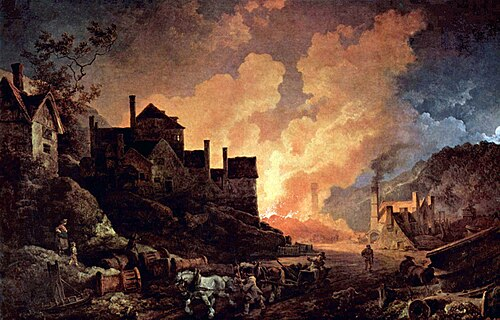
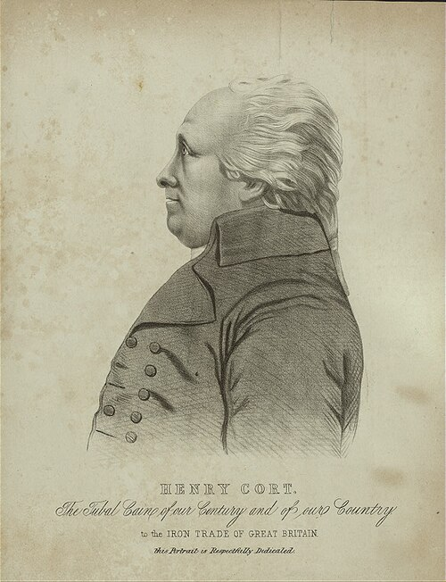
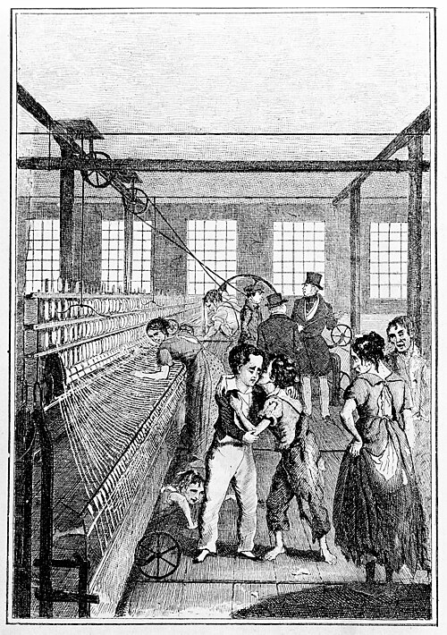

The History Portal • Department of History
Year 8 Course Textbook
Industrialisation, Empire & Power
Britain’s Transformation from Agrarian Kingdom to Global Workshop (1750–1901)
Overarching Historical Enquiry
“How did 19th-century Britain transform at home and abroad?”

Primary Visual Plate: Imperial Federation: Map of the World Showing the Extent of the British Empire in 1886 (Walter Crane)
Department of History • KS3 Curriculum Companion
19 September 2026 • The History Revision Hub
Table of Contents • Unit Enquiries
8 Four-Act Enquiries
Lesson 1
What powered the Industrial Revolution, and how did a Fareham ironmaster change the world?
Lesson 2
Was industrial work progress or punishment?
Lesson 3
Did industrialisation make British towns unlivable?
Lesson 4
How was the British Empire built and sustained?
Lesson 5
How did the Empire strike back? The 1857 Indian Rebellion
Lesson 6
How did ordinary people fight for a voice?
Lesson 7
How did the road to democracy expand?
Lesson 8
Who truly benefited from 19th-century transformation?
Chronological Spine (1750–1901)
1769–1784: Watt steam engine patent & Henry Cort Funtley ironworks breakthroughs.
1780–1830: Mechanisation of textiles; rise of factory cities & decline of domestic system.
1815–1819: Post-Waterloo economic distress; 1819 Peterloo Massacre at St Peter’s Field.
1832: Great Reform Act enfranchises industrial middle class; working class excluded.
1842: Edwin Chadwick’s Sanitary Report exposes squalor of industrial slums.
1857: Indian Rebellion shatters East India Company rule; direct Crown Raj established.
1870–1901: High Victorian Empire, Scramble for Africa, and the standard of living debate.
Chronological Anchors: 4 Key Milestones
1769
Watt's Steam Engine
James Watt patents the separate condenser, transforming coal into rotative mechanical power and triggering an insatiable demand for machinery iron.
1775–1780
The "Pig Iron" Crisis
British blast furnaces produce brittle, sulphur-choked iron; the Royal Navy dangerously depends on Baltic imports from Sweden and Russia.
1783–1784
Cort's Funtley Breakthrough
Henry Cort masters the reverberatory puddling furnace and grooved rolling mill on the River Meon, securing domestic self-sufficiency.
March 1787
Portsmouth Dockyard Triumph
Admiralty hammer trials prove Funtley iron equals the world's finest Swedish Orgrounds, securing British naval supremacy.

Source A: Coalbrookdale by Night (1801), painted by Philipp Jakob de Loutherbourg (Science Museum, London). The blast furnaces of the Madeley Wood ironworks illuminate the Shropshire night with fiery intensity, capturing Britain's dramatic shift from water and wood to a coal-fired industrial economy.
[1.1] Before the mid-eighteenth century, Britain was an agrarian realm shackled to the slow rhythms of the seasons and the limits of human muscle. In cramped stone cottages across Hampshire, Yorkshire, and the Cotswolds, families spun wool and hammered metal under the domestic system. Machines were crude wooden contraptions enslaved to the weather: waterwheels ground to a halt during parched summer droughts or froze solid in winter frosts, windmills depended on fickle gusts, and draft horses consumed costly oats. Production was painfully slow, exhausting, and strictly limited in scale.
[1.2] The fire that shattered this ancient ceiling was coal. Buried deep beneath the British landscape lay vast, concentrated seams of fossilized sunlight, packed with far greater thermal energy than all the timber forests of Europe. In 1769, Scottish mathematical instrument maker James Watt patented his separate condenser for the steam engine, transforming coal into smooth, relentless rotative power. Watt's invention severed manufacturing from geography: factories no longer had to cling to remote rushing rivers. Steam engines could roar anywhere coal could be carted, driving multi-storey textile mills, deep mine pumps, and colossal iron machinery.
[1.3] But as factory chimneys multiplied, Britain's industrial miracle collided with a terrifying, humiliating bottleneck: iron. To build high-pressure boilers, piston rods, factory gears, and bridges, engineers needed tough, bendable wrought iron. British blast furnaces, however, could only produce crude "pig iron". The molten metal earned this peculiar name because when it poured from the blast furnace down a central sand trench into dozens of smaller side-moulds, it looked uncannily like a litter of squealing piglets suckling from a mother sow. Worse still, British pit coal was choked with foul, yellow sulphur. When smelted, the sulphur poisoned the molten metal, leaving pig iron as brittle as glass. Strike a bar of British pig iron with a blacksmith's hammer, or subject it to high-pressure steam, and it shattered into lethal flying shrapnel.
[1.4] This chemical flaw threatened national survival. The Royal Navy—Britain's wooden wall of defense—depended on thousands of tons of flawless, flexible wrought iron for hull bolts, rudder irons, mast hoops, and multi-ton anchors for colossal 100-gun battleships like HMS Victory. If an anchor bolt snapped in an Atlantic gale, a warship was doomed. Because British iron was useless, Britain was forced to import over 50,000 tons of premium wrought iron every single year from Sweden and Russia across the stormy Baltic Sea. If the Baltic froze over, or if enemy French and Spanish fleets blockaded the sound, the Royal Navy would rot in harbour. On the eve of global war, the mighty British Empire was held hostage by foreign iron.

Source B: Technical cross-section of Henry Cort's patented reverberatory puddling furnace at Funtley Ironworks, Hampshire (1783). The arched brick roof reverberated intense heat downward onto the shallow hearth, burning off carbon while keeping raw coal smoke away from the refining metal.
[2.1] The crisis was felt nowhere more acutely than along the Hampshire coastline. Just fifteen miles down the Solent lay Portsmouth Royal Navy Dockyard—the largest industrial complex on Earth and the beating military heart of the British Empire. Royal Navy shipwrights were desperate for iron. An energetic former naval supply agent named Henry Cort recognized a once-in-a-lifetime opportunity: whoever could unlock a way to turn cheap, brittle British pig iron into naval-grade wrought iron would secure an immense fortune from the Admiralty.
[2.2] In 1775, Cort bet his life savings. He leased the old corn mill at Funtley along the quiet River Meon, just north of Fareham. Funtley was an inspired gamble: the rushing river supplied continuous water power to turn heavy mill wheels, while Fareham Creek gave him direct tidal water transport down Portsmouth Harbour straight into the Royal Dockyard.
[2.3] Between 1783 and 1784, working amid blistering heat and flying sparks, Cort patented two epoch-making breakthroughs that fundamentally transformed modern metallurgy:
1. The Reverberatory Puddling Furnace (1783): Cort designed a furnace with an arched brick roof that kept the coal fire physically separate from the iron. The coal burned in a side chamber, and the curved masonry bounced (reverberated) pure, radiant heat down onto the shallow hearth like a giant oven. The dirty coal smoke and sulphur never touched the metal! In front of this blistering 1,200°C inferno stood the "puddler"—a skilled artisan who slid a 10-foot iron paddle through a porthole, stirring the bubbling liquid metal like a witch's cauldron. As he stirred, oxygen reacted with the molten soup, burning away carbon until the iron thickened into glowing, pasty balls of pure wrought iron.
2. The Grooved Rolling Mill (1784): Instead of having teams of exhausted blacksmiths slowly hammer the hot iron blooms by hand for hours, Cort fed the glowing metal directly through pairs of water-driven, grooved iron rollers. In seconds, the rollers squeezed out remaining liquid slag and compressed the metal into uniform naval bolts, bars, and rails at fifteen times the speed of traditional forge hammers.
[2.4] Fieldwork Archaeology: The Surviving Hydraulic Footprint: Although Cort's ironworks were later dismantled, the physical anatomy of this industrial breakthrough remains etched into the Hampshire landscape along the River Meon at Funtley. When historians compare the 1784 framed contemporary watercolour of Fontley Iron Mills against modern fieldwork photographs, the site's industrial layout becomes clear. The 1784 painting depicts an active, smoking forge: dense black plumes rise from the reverberatory puddling furnace chimney, workers maneuver glowing metal, and water surges into the mill race. Today, the River Meon still plunges over the surviving 18th-century stone weir and sluice gate that directed hydraulic energy into the works. Directly beside the waterfall, the curved circular brick housing marks the exact position of Cort's massive waterwheel, which supplied the horsepower needed to drive his patented grooved rolling mill.
[2.5] Forensic Metallurgy: Puddling Slag & Hampshire's Only Slag Wall: The chemical reality of Cort's puddling process left an indestructible archaeological fingerprint: iron slag (clinker). As molten iron was stirred and squeezed through rollers, glassy silicate impurities were separated and discarded in massive mounds around the forge. Over two centuries later, the owner of the surviving mill property excavated tons of this heavy, dark, pitted clinker from the soil and built a dry-stone perimeter wall bordering the lawn—creating the only iron slag wall in Hampshire. Nearby stands Fontley House, the Georgian red-brick residence of Cort's business partner Samuel Jellicoe. Crowning its roofline are authentic 18th-century chimney pots known as Fareham "Tallboys", crafted from the region's famous vibrant red terracotta clay with distinctive crimped white-slip collars. Together, these landscape relics prove how local Hampshire geography, natural hydraulics, and innovative metallurgy combined to create a world-changing industrial powerhouse.
[3.1] Cort knew his patents were worthless unless he could convince the most demanding, sceptical customer in the world: the British Admiralty. In March 1787, Cort invited the Navy Board to Portsmouth Royal Navy Dockyard for a public showdown. In the presence of dockyard commissioners and hardened master smiths who had spent their lives working Swedish iron, naval artisans subjected Funtley iron to brutal stress tests. They twisted square bars cold into corkscrews. They bent thick rods double back upon themselves. They punched holes through glowing plates and hammered them into massive anchor rings with 20-pound sledgehammers. The Funtley iron did not crack, split, or shatter.
[3.2] The official Admiralty report (Source C) delivered an emphatic verdict: Funtley wrought iron was superior in toughness, flexibility, and tensile strength to any iron ever manufactured in the British realm, and "fully equal to the best Swedish Orgrounds iron for ship bolts, mast hoops, and anchors for His Majesty's Fleet." The bottleneck was shattered. Britain no longer needed Swedish or Russian imports. Within two decades, British iron production multiplied by 400%, from 68,000 tons in 1788 to over 250,000 tons by 1806. When Napoleon Bonaparte went to war against Britain, it was Cort's tough Hampshire-invented iron that armored the Royal Navy, forged the cannons of the fleet, and held together HMS Victory at the Battle of Trafalgar (1805). Cort was hailed across the nation as "the father of the iron trade."
[3.3] The Tragic Plot Twist: Yet Cort's world-changing success ended in personal tragedy. To finance the massive expansion of Funtley, Cort had entered into a partnership with Adam Jellicoe, the Deputy Paymaster of the Royal Navy. In August 1789, Jellicoe died suddenly. When naval auditors unlocked Jellicoe's desk, they uncovered a monstrous scandal: Jellicoe had secretly embezzled £27,000 of public naval tax funds and invested it into Cort's ironworks! The Crown moved with ruthless, unforgiving speed. Government bailiffs seized Cort's Funtley lease, confiscated his patents, and froze his accounts. Without patent protection, ironmasters across Wales, Shropshire, and Scotland freely copied Cort's puddling process without paying him a single penny in royalties. Cort was plunged into financial ruin, spent his final years writing ignored appeals to Parliament, and died in impoverished obscurity in May 1800. He had handed Britain the keys to industrial supremacy, but died without a penny to his name.
Source C: Admiralty Navy Board Portsmouth Dockyard Trial Minutes (March 1787)
“Pursuant to your directions, we have caused trials to be made of Mr Henry Cort’s iron manufactured at Fontley. We find it to exceed in strength and toughness any iron manufactured in this kingdom, and fully equal to the best Swedish Orgrounds iron for ship bolts, mast hoops, and anchors for His Majesty’s Fleet.”

Source D: Contemporary dedication portrait of Henry Cort, inscribed: “HENRY CORT: The Tubal Cain of our Century and of our Country, Dedicated to the Iron Trade of Great Britain” (British Museum). Contemporaries recognized Cort as an industrial patriarch who gave Britain mastership of iron.
[4.1] When evaluating why the Funtley Ironworks succeeded in unlocking the Industrial Revolution, historians clash over competing explanations. Proponents of Geographical Proximity argue that Cort's location near Fareham and Portsmouth Dockyard was the decisive factor. In an era before railway networks, moving heavy pig iron and coal overland was prohibitively expensive; Funtley offered navigable river transport via the Meon and Fareham Creek directly to Portsmouth—the single largest consumer of naval iron on Earth. Without this massive, guaranteed military customer on his doorstep, Cort would have lacked the financial incentive or trial facilities to develop his ideas.
[4.2] Conversely, proponents of Technological Innovation argue that geography was merely passive backdrop. Hundreds of ironworks existed near British ports, yet none could produce wrought iron from British pit coal. The Royal Navy had rejected British iron for over a century; only Cort's personal experimentation in mastering the chemical thermodynamics of the reverberatory furnace and automating the grooved rolling mill solved the crisis.
[4.3] ★ Scholar's Edge: The Atlantic Controversy: Jamaican Enslaved Metallurgists & Technological Appropriation: In 2023, a groundbreaking historical investigation by Dr Jenny Bulstrode (University College London) challenged the traditional "lone English genius" narrative. Bulstrode revealed that years before Cort's patents, an ironworks in Morant Bay, Jamaica (Reeder's Pen), operated by 76 enslaved Black metallurgists trafficked from West Africa—home to centuries of sophisticated metallurgy—was turning scrap into high-grade malleable iron using grooved rollers adapted from sugar cane mills, netting over £4,000 annually. In official records, owner John Reeder admitted he was "quite ignorant of such a business," testifying that the enslaved Africans were "perfect in every branch of the Iron Manufactory." In 1782, amid invasion panics and fears of an armed slave insurrection, the British military razed the foundry, and shipping records suggest equipment and scrap were transported to Portsmouth, where Cort struggled with Navy scrap contracts. While historians such as Oliver Jelf (2025) argue that Cort developed his puddling independently in Hampshire and dispute the shipping link, this fierce academic controversy highlights how the Industrial Revolution was inextricably intertwined with global Atlantic colonial networks and African technological agency.
Enquiry Extended Writing Task • Completed in Workbook (Page 5)
Enquiry Essay: "How significant was Henry Cort’s puddling process to British industrial and naval supremacy?"
1. Immediate Impact: Explain how Cort’s puddling furnace and grooved rollers boosted British iron production 15 times and stopped Britain relying on foreign Baltic iron [1.3, 2.3, 3.2].
Starter: "The immediate significance of Henry Cort’s puddling process was that it solved Britain’s dangerous dependence on..."
2. Long-Term Changes: Explain how cheap, strong wrought iron transformed Victorian Britain over time—making it possible to build steam engines, railways, and iron warships [1.2, 3.2, 4.1].
Starter: "Over time, Cort’s mass-produced wrought iron transformed Victorian Britain by..."
3. Overall Evaluative Judgment: Weigh whether Cort’s metallurgical breakthrough was the primary catalyst for British industrial supremacy, or whether coal and Watt’s steam engine were more foundational [1.2, 4.2].
Starter: "Ultimately, I judge that Cort’s puddling process was [exceptionally / partly] significant because..."
★ Scholar’s Edge (Extension): Evaluate how Dr Jenny Bulstrode’s (2023) research into 76 enslaved Black metallurgists at Morant Bay, Jamaica challenges the traditional narrative of industrial innovation [4.3].
Starter: "Furthermore, recent historiographical research by Dr Jenny Bulstrode reveals that this traditional narrative must be re-evaluated because..."
The History Portal • Industrialisation, Empire & Power
Lesson 1 Reading Plate

Source A: Thomas Allom, Powerloom Weaving (1835, Science Museum). Workers and young child assistants tending rows of steam-driven powerlooms in a Lancashire cotton mill under the watchful eye of an adult overseer, illustrating the deafening, machine-dominated discipline of the factory system.
[1.1] Prior to the nineteenth century, British manufacturing was anchored in the domestic system. Across countryside cottages, handloom weavers, wool carders, and blacksmiths worked at their own pace. Life was not an idyllic rural paradise—cottages were damp, pay was modest, and young children assisted with carding wool or winding bobbins from an early age. Yet despite its hardships, the domestic system possessed one defining quality: human autonomy. Families worked by natural daylight and task-orientation rather than strict clock time. Workers controlled their own meal breaks, paused during seasonal harvest cycles, and celebrated "Saint Monday"—taking the first day of the week off to recover from Sunday festivities.
[1.2] The introduction of steam power obliterated this ancient autonomy. When Richard Arkwright built the first water-powered spinning mill at Cromford in 1771, followed by James Watt's rotary steam engines, industrialists constructed multi-storey brick factories containing hundreds of synchronized power looms. Because steam boilers consumed massive amounts of coal whether machines were running or idle, factory owners demanded continuous, uninterrupted operation. The natural rhythm of human muscle was replaced by the tyranny of the factory clock. Shifts stretched from 5:00 am to 8:00 pm—up to fifteen hours a day, six days a week.
[1.3] The factory environment was deliberately engineered for mechanical speed rather than human safety. Looms and spinning frames clattered at deafening volumes, making verbal communication impossible. Air was thick with airborne cotton fluff and coal smoke, causing chronic lung diseases such as byssinosis ("brown lung"). Drive shafts, leather pulleys, and heavy iron gears turned at blistering speeds without wire guards or safety shut-offs. A single second of exhaustion or distraction could result in a worker's hair or apron being dragged into revolving cogs, tearing off scalps, crushing limbs, or causing instant death.
Source B: The Royal Albert Hall in South Kensington, London (opened 1871). The iconic crimson exterior of this world-famous imperial concert hall was constructed using over six million "Fareham Red" bricks, hand-moulded in Hampshire clay pits and transported to London via the newly constructed railway network.
[2.1] The dramatic transformations of the Industrial Revolution were not confined to the cotton mills of Manchester or the coal pits of Newcastle. In southern Hampshire, industrialisation sparked an extraordinary manufacturing boom grounded in local geology. As the British Empire expanded, London's population exploded from 1 million in 1801 to over 4.5 million by 1881. This urban explosion created an insatiable national hunger for durable, weather-resistant building materials to construct railway viaducts, imperial government ministries, suburban terraces, and naval barracks.
[2.2] Fareham sat directly atop a geological goldmine: the dense, iron-rich clays of the Reading Formation along the Meon Valley. In the 1830s and 1840s, local landowners and entrepreneurs established massive commercial brickworks across Funtley, Uplands, and Fontley. The unique mineral composition of local Hampshire clay, when fired in coal-burning kilns at temperatures exceeding 1,000°C, produced a brick of extraordinary hardness, smooth texture, and an unmistakable, deep crimson hue. These bricks became internationally celebrated as "Fareham Reds".
[2.3] The opening of the London & South Western Railway through Fareham in 1841, combined with tidal barge transport down Fareham Creek into Portsmouth Harbour, transformed Fareham into a national industrial brickmaking powerhouse. Over 20 million Fareham Reds were manufactured annually. Victorian architects recognized them as the premier structural brick of the empire: they were chosen to construct the colossal Royal Albert Hall in South Kensington (using over 6 million Fareham bricks), the imposing Portsmouth Royal Naval Barracks, and London's landmark St Pancras railway terminus. Hampshire's local earth was literally building the architectural masterpieces of the Victorian modern world.
[3.1] Behind the architectural splendour of the Royal Albert Hall and Britain's global industrial wealth lay a brutal human reality: the systematic exploitation of children. Industrialists actively recruited young children because they were cheap—paid barely ten to twenty percent of an adult male's wage—easier to intimidate through corporal punishment, and small enough to crawl into cramped, hazardous spaces. In textile mills, young boys and girls worked as "scavengers", crawling on hands and knees beneath moving looms to sweep up flammable cotton waste, and as "piecers", leaning over clattering spindles to tie broken threads.
[3.2] In 1832, mounting public concern prompted Parliament to establish a Royal Commission chaired by MP Michael Sadler to investigate child labour. The resulting Sadler Committee Report (Source C) horrified the British public with direct eyewitness testimonies. Witnesses described eight-year-old children working fourteen-hour shifts from 6:00 am to 8:30 pm, kept awake by overseers wielding heavy leather straps ("strapping"). Constant standing on hard wooden floors for years caused widespread physical deformities, including curved spines, collapsed foot arches, and severe rickets (bowed legs) caused by malnutrition and lack of sunlight.
[3.3] Crucially, archival evidence reveals that child exploitation was not merely a northern textile phenomenon; it was the foundation of our local Hampshire economy. In the Funtley and Fareham brickfields, whole families laboured under exhausting conditions. Official 1881 Census returns for Fareham (Source D) reveal boys as young as ten and eleven employed in the clay pits. Young children worked as "pug boys", driving blindfolded horses in endless circles to power the heavy iron pug mills that ground raw clay and water. Other children laboured as "turners" and "barrowers", walking up to fifteen miles a day along outdoor drying hacks, manually turning and stacking thousands of wet, six-pound clay bricks under scorching sun or winter sleet.
Source C: Minutes of Evidence before the Committee on the Bill to Regulate the Labour of Children (The Sadler Report, 1832)
“I began work at Bradley Mills near Huddersfield at eight years old... our common hours of labour were from six in the morning till half-past eight at night... fourteen hours and a half of actual labour. We had no time allowed for breakfast or afternoon refreshment; we had to eat our meals as we could, before the machines. If we were a minute too late, we were beaten with a leather strap; I have been severely strapped myself. At that time, if we were tired and sat down, we were beaten... my limbs are deformed from standing so long.”

Source D: Contemporary 1840 engraving depicting child scavengers and piecers working under spinning machinery while overseers watch (The Life and Adventures of Michael Armstrong, the Factory Boy). Contemporaries used such visual exposés to demand government intervention.
[4.1] The horrific evidence revealed by the Sadler Report and newspaper exposes forced Parliament to intervene, passing the landmark 1833 Factory Act (banning factory work for children under nine, limiting hours for ages 9–13, and requiring two hours of compulsory schooling daily) and the 1844 Factory Act. Yet among modern historians, the central question of the Industrial Revolution remains intensely debated: was this transformation an engine of progress, or a system of human punishment?
[4.2] The "Pessimist" Historical School (championed by E.P. Thompson, Eric Hobsbawm, and Friedrich Engels) argues that industrialisation was an unmitigated social disaster for the working classes. They contend that traditional artisan pride was destroyed, workers were reduced to expendable "hands", and generations of children suffered permanent physical deformities, chronic disease, and premature death in mills and clay pits for capitalist profit. In their view, national statistics of rising GDP disguised the brutal destruction of working-class health, family life, and human dignity.
[4.3] Conversely, The "Optimist" Historical School (led by T.S. Ashton, R.M. Hartwell, and Sir John Clapham) argues that the Industrial Revolution ultimately represented immense societal progress. They point out that pre-industrial agrarian life was plagued by periodic famine, crushing rural poverty, and domestic child labour from age five. By creating mass-production factories, Britain unlocked unprecedented economic growth that eventually led to rising real wages, cheaper food, factory-made clothing, cleaner water infrastructure, and the legislative framework of the modern welfare state. In the Optimist view, while the initial transition involved severe suffering, it created the modern wealth that liberated future generations from agrarian poverty.
Enquiry Extended Writing Task • Completed in Workbook (Page 7)
Enquiry Essay: "To what extent was industrial work in 19th-century Britain an engine of human punishment rather than societal progress for the working classes?"
PEE Paragraph 1 (Pessimist / Punishment): Argue that factory and brickfield labour was a brutal punishment, citing 14-hour days, physical beatings, deformities, and the exploitation of children in northern mills and Fareham clay pits [1.3, 3.2, 3.3].
PEE Paragraph 2 (Optimist / Progress): Counter-argue that industrial work generated societal progress, citing the creation of mass national wealth, rising real wages, consumer goods, and parliamentary reform like the 1833 Factory Act [2.3, 4.3].
Historiographical Verdict: Weigh the competing arguments to reach a balanced judgment on whether short-term generational sacrifice outweighed long-term societal advancement.
The History Portal • Industrialisation, Empire & Power
Lesson 2 Reading Plate
[1.1] Between 1800 and 1850, the population of Britain underwent the most violent geographic displacement in its history. As agricultural mechanisation and enclosure reduced rural employment, millions of farm labourers migrated into rapidly expanding manufacturing cities like Manchester, Leeds, Birmingham, and London. Manchester mushroomed from 75,000 residents in 1801 to over 300,000 by 1851. Because Britain had no municipal zoning laws, town planning, or building regulations, private speculative builders threw up vast networks of cheap, low-grade accommodation to maximize rental profit.
[1.2] The most notorious of these dwellings were "back-to-back" houses, built in long, claustrophobic terraces where each house shared three of its four walls with adjoining properties, completely eliminating cross-ventilation. Entire families—often eight to ten individuals—lived packed into a single unventilated room or damp cellar. Water supply was practically non-existent: a single communal iron standpipe might serve sixty houses for just thirty minutes each morning. Human excrement was collected in deep, unlined brick cesspools dug directly beneath cellar floors or communal courtyards. In Leeds, inspectors discovered that three hundred people frequently shared a single overflowing privy.
[1.3] The fatal flaw of this unregulated urban landscape was geological. Because cesspools were unlined pits, millions of gallons of raw human effluent gradually seeped into the surrounding porous subsoil. As documented in Source A, industrial towns were choked with soot, animal refuse, and stagnant waste. Inevitably, this saturated toxic liquid infiltrated the shallow communal wells from which working-class families pumped their daily drinking water. Under the prevailing government doctrine of laissez-faire (leave alone), politicians insisted that housing and sanitation were matters of private contract in which the state had no right to interfere. The stage was set for a public health catastrophe.
[2.1] In October 1831, a terrifying new affliction arrived in the port of Sunderland from the Baltic: Asiatic Cholera. Caused by the bacterium Vibrio cholerae, cholera struck with ferocious speed. An apparently healthy worker would suffer violent vomiting and explosive watery diarrhea, turning blue and dehydrating into a shriveled corpse within twelve hours. Four major cholera epidemics swept Victorian Britain—in 1831–32, 1848–49, 1853–54, and 1866—claiming over 130,000 lives. Yet medical authorities were powerless because they adhered dogmatically to "Miasma Theory", believing disease was transmitted through foul-smelling air rising from rotting animal matter, stagnant puddles, and cemetery soil.
[2.2] To combat bad air, municipal boards burned barrels of tar in the streets and flushed surface gutters into local rivers. In London, this meant dumping hundreds of thousands of tons of raw sewage directly into the River Thames—the very river from which water companies pumped drinking water back into homes! In 1854, Dr John Snow famously broke the miasma consensus during the Soho cholera outbreak: by mapping cholera deaths around the Broad Street pump, Snow proved that cholera was an ingested waterborne poison, not an airborne miasma. When he removed the pump handle, new infections ceased instantly. Yet Parliament still dragged its feet, refusing to spend tax revenues on national sanitation.
[2.3] The decisive political catalyst arrived not from medical science, but from unbearable sensory discomfort: the "Great Stink" of June–August 1858. An unusually scorching summer caused the Thames—choked with the untreated excrement of three million Londoners—to ferment into an unendurable toxic sewer. Inside the Houses of Parliament on the riverbank, the stench became so blinding that MPs vomited into handkerchiefs and soaked window curtains in chloride of lime to neutralize the odor. Terrified that the miasma would infect them, Parliament abandoned laissez-faire in eighteen days, passing legislation granting civil engineer Joseph Bazalgette £3 million to construct a monumental network of underground intercepting sewers.
[3.1] The breakthrough in understanding Victorian public health came through the pioneering quantitative investigations of social reformer Edwin Chadwick. Serving as Secretary to the Poor Law Commission, Chadwick conducted an exhaustive forensic audit across the nation’s towns, publishing his seminal Report on the Sanitary Condition of the Labouring Population of Great Britain in July 1842. Drawing on thousands of interviews with local doctors and parish registrars, Chadwick documented that in industrial towns like Manchester and Liverpool, the average life expectancy for a working-class labourer had plummeted to an unbelievable seventeen to nineteen years, compared to thirty-eight in rural Rutlandshire.
[3.2] As evidenced in Source C, Chadwick did not appeal merely to Christian charity; he deployed cold, quantitative arguments designed to shock the governing classes. He calculated that preventable diseases like cholera and typhus cost the national treasury far more in poor relief, orphan support, and lost worker productivity than would the construction of comprehensive municipal water and drainage networks. Chadwick argued passionately that environmental filth caused disease, which in turn caused pauperism and moral degradation. To solve the crisis, he advocated glazed ceramic sewer pipes, continuous pressurized water supplies, and an end to local parochial incompetence.
[3.3] Furthermore, local archives demonstrate that sanitary failure was not merely a northern textile nightmare. As documented in Source D, the Fareham Local Board of Health minute books from 1850 reveal that Hampshire market towns were equally afflicted. In Fareham, open sewage ditches ran behind West Street breweries into Fareham Creek, while raw effluent from pigsties soaked into subsoil wells, generating fatal typhus fever outbreaks. Despite this overwhelming evidence, wealthy ratepayers and slum landlords organized bitter resistance under the banner of "Anti-Centralisation", fiercely fighting the 1848 Public Health Act because it permitted councils to levy local sanitation rates. Only when cholera struck again in 1853 did local boards slowly begin laying brick drains.
[4.1] The sanitary revolution culminated in two immense structural achievements: civil engineering and state legislation. Between 1859 and 1875, Joseph Bazalgette oversaw the construction of London’s intercepting sewer system—an engineering triumph encompassing 1,100 miles of street sewers, 82 miles of subterranean brick interceptors, and four colossal steam pumping stations. Bazalgette’s system diverted 420 million gallons of sewage eastward away from the city center every day. Simultaneously, Parliament passed the landmark 1875 Public Health Act, permanently dismantling laissez-faire by legally compelling every local council in Britain to appoint a Medical Officer of Health, inspect food safety, pave streets, and guarantee clean water supplies.
[4.2] Today, historical debate divides between two competing academic schools. "Pessimist" historians (such as Friedrich Engels, E.P. Thompson, and Anthony Wohl) argue that the first eight decades of industrialisation made British towns unlivable death traps. They emphasize the horrific human toll: 130,000 cholera deaths, life expectancies below twenty years in Liverpool, generational physical stunting, and the sheer psychological trauma of living in filth while factory owners accumulated vast fortunes. To Pessimists, industrialisation was a catastrophic human sacrifice where two full generations were broken on the altar of capitalist profit.
[4.3] Conversely, "Optimist" historians (such as Sir John Clapham, T.S. Ashton, and modern urban economists) argue that British towns were the indispensable crucibles of modern civilization. They point out that before industrialisation, rural agrarian Britain was equally subject to periodic famine, infant death, and devastating plague. The immense wealth and engineering technology generated by factories—from steam pumps and glazed stoneware pipes to Fareham Red bricks—ultimately provided the financial capital and physical materials required to build the world’s first modern, sanitary cities. In the Optimist view, the short-term urban crisis provoked the birth of public health, scientific epidemiology, and the modern welfare state.
Enquiry Extended Writing Task • Completed in Workbook (Page 9)
Enquiry Essay: "To what extent did industrialisation make 19th-century British towns unlivable death traps for the working classes?"
PEE Paragraph 1 (Pessimist / Squalor & Disease): Argue that rapid urbanisation turned industrial towns into unlivable death traps, citing back-to-back housing, cesspools, cholera epidemics, and Doré's depiction of London [1.2, 2.1, Source A].
PEE Paragraph 2 (Optimist / Infrastructure & Reform): Counter-argue that industrialisation generated the engineering technology and municipal legislation to create modern sanitation, citing Chadwick's report, Bazalgette's 1,100-mile sewer system, and the 1875 Public Health Act [3.2, 4.1].
Historiographical Verdict: Reach a balanced, nuanced conclusion evaluating whether short-term urban misery outweighed the long-term civilizational creation of public health.
The History Portal • Industrialisation, Empire & Power
Lesson 3 Reading Plate
[1.1] By the early nineteenth century, Great Britain governed the largest and most commercially lucrative empire in human history. This global dominion was not founded by accident; it was meticulously engineered through the economic doctrine of mercantilism. Under mercantilist laws—enforced by the strict Navigation Acts—foreign ships were banned from trading directly with British colonies. The empire operated as a closed commercial circuit: colonies supplied cheap raw materials (American and Indian cotton, Caribbean sugar, Canadian timber), which were transported exclusively on British merchant ships to domestic manufacturing hubs like Manchester, Glasgow, and Fareham.
[1.2] The corporate vanguard of this imperial expansion was the Honourable East India Company (EIC). Founded in 1600 as a private joint-stock trading venture, the EIC evolved over two centuries into a militarized corporate state. Backed by royal charters granting it a total monopoly on trade east of the Cape of Good Hope, the Company maintained its own private mercenary army of over 200,000 Indian soldiers (sepoys) commanded by British officers. Following the Battle of Plassey (1757) and the Treaty of Allahabad (1765), the EIC conquered the wealthy province of Bengal, acquiring the constitutional right to collect all land taxes. As documented in Source C, Robert Clive bragged that the Company extracted a clear annual profit of over £2 million sterling to enrich its London directors.
[1.3] The vital geopolitical shield that protected these corporate trade routes was the Royal Navy. Operating from strategic maritime chokepoints—Gibraltar, Malta, the Cape of Good Hope, and Singapore—British warships exercised unchallenged command of the oceans. The Navy enforced British commercial hegemony through "gunboat diplomacy", bombarding coastal ports and threatening recalcitrant rulers to secure treaty ports and duty-free access for British manufactured goods. By 1815, with the final defeat of Napoleonic France, Britain’s industrial manufacturing dominance and naval supremacy had forged the "Pax Britannica"—a century of global imperial hegemony.
[2.1] While the empire spanned five continents, its physical heartbeat was anchored just five miles from Fareham: Portsmouth Royal Dockyard. During the nineteenth century, Portsmouth was transformed into the largest, most technologically advanced industrial manufacturing complex on earth. Employing over 8,000 skilled shipwrights, caulkers, boilermakers, and riveters, the dockyard consumed staggering quantities of raw materials extracted from across the empire—Canadian pine, Indian teak, Cornish copper, and refined wrought iron forged at Henry Cort’s Funtley ironworks.
[2.2] Portsmouth was the pioneering birthplace of modern industrial mass production. In 1803, French-born engineer Marc Isambard Brunel (father of Isambard Kingdom Brunel) installed the revolutionary Portsmouth Block Mills. Powered by steam engines and designed by toolmaker Henry Maudslay, forty-five specialized metalworking machines automated the manufacture of wooden rigging blocks. Previously, skilled craftsmen hammered out blocks by hand; Brunel’s automated plant produced 130,000 identical pulley blocks per year with just ten unskilled workers—a tenfold increase in productivity that equipped the Royal Navy with unmatched efficiency.
[2.3] By mid-century, industrial technology transformed naval warfare from wooden sailing ships to steam-powered iron monsters. In response to France launching the armored frigate La Gloire, the Admiralty commissioned HMS Warrior, launched in 1860 (Source B). Built with an armor belt of 4.5-inch solid wrought iron backed by eighteen inches of teak, Warrior carried steam engines capable of driving its 9,000-ton hull at over fourteen knots. Warrior was so heavily armed and virtually indestructible that no foreign warship dared engage it. To maintain this global hegemony, Parliament codified the "Two-Power Standard" in 1889, legally mandating that the Royal Navy must equal or exceed the combined naval strength of the next two strongest world powers combined.
[3.1] To fully understand how the British Empire functioned, historians must cross-reference two diametrically opposed sets of archival evidence: the corporate financial ledgers of the imperial conquerors, and the forensic economic records of the colonized populations. In the eighteenth century, India was not an impoverished backwater; it was the textile workshop of the world, responsible for approximately 25 percent of total global manufacturing output. Indian cotton calicoes and delicate Dhaka muslins were renowned across Asia and Europe for their superior texture, durability, and vibrant colors.
[3.2] However, when the East India Company conquered Bengal, it dismantled this indigenous economy to eliminate competition for Britain’s burgeoning cotton mills. In London, Company directors remitted vast financial fortunes (Source C), while Parliament enacted punitive, one-sided tariffs. As documented in the harrowing parliamentary evidence of 1840 (Source D), Indian handloom cloth imported into Britain was slapped with crushing customs duties of 70 to 80 percent, while British factory-made cotton cloth was forced into India completely duty-free. Within twenty years, British textile exports to India exploded from 800,000 yards to over 51 million yards.
[3.3] The result was the catastrophic "de-industrialisation" of India. Millions of skilled Indian handloom weavers, spinners, and dyers were thrown into destitution as cheap machine-made cloth from Lancashire flooded Indian bazaars. In Bengal, the historic textile metropolis of Dhaka saw its population collapse from 150,000 to just 30,000 within a generation. Deprived of manufacturing income, millions of displaced artisans were forced into precarious agricultural labour, leaving Indian rural society catastrophically vulnerable to drought and devastating famines. While Victorian celebratory maps (Source A) portrayed the empire as a glorious civilizing mission, archival evidence proves that British industrial supremacy was built upon the deliberate economic ruin of colonized artisans.
[4.1] By the late nineteenth century, the British Empire spanned over 13 million square miles and ruled approximately 400 million subjects—a quarter of the globe's population and landmass. Imperial apologists and "Civilizing Mission" historians (such as J.R. Seeley and Thomas Macaulay) argued that this colossal domain was a benevolent enterprise of progress, law, and modern commerce. They pointed to the construction of 25,000 miles of railways in India, telegraph networks, modern irrigation canals, and the suppression of piracy as proof that British rule brought stability and technological modernization to underdeveloped societies.
[4.2] Conversely, critical and postcolonial historians (such as Shashi Tharoor, Amiya Bagchi, and William Dalrymple) demonstrate that the empire was fundamentally an engine of systematic resource extraction backed by state terror. Dalrymple describes the East India Company not as an agent of civilization, but as an uncontrolled corporate monster that used military violence to plunder Bengal, resulting in the catastrophic famine of 1770 in which ten million people perished. Tharoor points out that India’s share of world manufacturing collapsed from 27 percent in 1700 to under 2 percent by the end of British rule—a decline engineered not by free market efficiency, but by military conquest and discriminatory tariffs.
[4.3] Today, historians recognize that Britain’s industrial breakthrough at home cannot be separated from its imperial conquests abroad. Henry Cort’s puddling iron at Funtley, the automated block mills at Portsmouth Dockyard, and the cotton spinning mules of Lancashire were intimately dependent upon colonial resources, enslaved labour in the Americas, and captive consumer markets in Asia. Britain did not industrialize in isolation; its domestic factories and global empire were two halves of a single, deeply entangled imperial machine.
Enquiry Extended Writing Task • Completed in Workbook (Page 11)
Enquiry Essay: "To what extent was the growth of the British Empire driven primarily by commercial technological enterprise rather than military and economic coercion?"
PEE Paragraph 1 (Commercial & Technological Enterprise): Argue that imperial expansion was powered by technological innovations like steam power, Portsmouth Block Mills, ironclad engineering (HMS Warrior), and merchant trade networks [2.1, 2.2, Source B].
PEE Paragraph 2 (Military Coercion & Exploitation): Counter-argue that the empire was built on violent military conquest, corporate plunder by the East India Company, gunboat diplomacy, and the deliberate de-industrialisation of India [1.2, 3.2, Source C, Source D].
Historiographical Verdict: Reach a balanced, nuanced conclusion evaluating whether technology or coercion was the decisive driving force of the British Empire.
The History Portal • Industrialisation, Empire & Power
Lesson 4 Reading Plate
[1.1] By 1857, British rule across India rested on a razor’s edge. The East India Company governed over 150 million people with a private army of 232,000 Indian sepoys commanded by just 45,000 British soldiers and officers. For a century, sepoys had fought loyally for the Company across Asia. However, beneath the surface of colonial discipline lay decades of accumulated structural resentment. Indian soldiers were paid a fraction of British wages, were barred from the officer corps, and were forced into harsh overseas service that high-caste Hindu troops feared would strip them of their religious caste status.
[1.2] This discontent was severely exacerbated by the aggressive territorial policies of Governor-General Lord Dalhousie (1848–1856). Under his ruthless "Doctrine of Lapse", Dalhousie abolished the ancient Hindu tradition of royal adoption, declaring that if an Indian prince died without a biological male heir, his kingdom was automatically confiscated by the British. States like Satara, Sambalpur, and Jhansi were seized without consultation (Source A). In 1856, Dalhousie committed his greatest blunder: he dethroned the Nawab of Awadh (Oudh) and annexed the kingdom on grounds of "misgovernance". Awadh was the traditional homeland of over 40,000 high-caste Brahmin and Rajput sepoys in the Bengal Army; they suddenly saw their homeland occupied, their aristocratic families taxed, and their court stripped of sovereignty.
[1.3] The explosive spark that detonated this dry powder was the introduction of the new Pattern 1853 Enfield rifle in early 1857. To load the weapon, soldiers had to bite the paper cartridge open to pour gunpowder down the barrel. In January 1857, a rumor swept through the military cantonments at Dum Dum and Barrackpore that the cartridges were lubricated with animal tallow—a mixture of sacred cow fat (deeply offensive to Hindus) and unclean pig fat (forbidden to Muslims). When British officers issued clumsy denials and insisted the cartridges be used, sepoys became convinced that this was a deliberate conspiracy to defile their religious purity and force them into Christianity. On 29 March 1857, a young sepoy named Mangal Pandey fired upon his British officers at Barrackpore, shouting for his comrades to rise. Though Pandey was hanged, his defiance electrified northern India.
[2.1] On Sunday 10 May 1857, the rebellion erupted in full fury at the military station of Meerut, forty miles northeast of Delhi. After eighty-five sepoys were stripped of their uniforms and sentenced to ten years’ hard labour for refusing to touch the cartridges, their comrades mutinied. They broke open the cantonment jail, slaughtered British officers and European families, burned barracks, and galloped through the night toward Delhi. Arriving at the gates of the historic Red Fort on the morning of 11 May, the rebel soldiers demanded audience with the eighty-two-year-old Mughal Emperor, Bahadur Shah Zafar II. Reluctantly, the aged poet-king agreed to give his royal blessing, becoming the symbolic sovereign of the uprising.
[2.2] Within weeks, Company authority collapsed across the Gangetic plains. What began as a military revolt expanded into a massive civilian rebellion. Dispossessed taluqdars (landowners), impoverished handloom weavers, peasants, and holy men joined the fight, driving British magistrates and tax collectors into fortified enclaves. Key centers of resistance emerged under charismatic leaders: Nana Sahib and Tantia Tope at Kanpur; the Begum Hazrat Mahal in Awadh; and, most famously, twenty-two-year-old Rani Lakshmibai of Jhansi (Source B). Riding on horseback with her infant son tied to her back, Lakshmibai defended Jhansi against British siege forces, declaring: "I shall not give up my Jhansi!" Her martial courage made her the most celebrated hero of the anti-colonial resistance.
[2.3] The conflict was characterized by extreme, industrialized brutality on both sides. At Kanpur in June 1857, rebel forces surrounded the British garrison at Wheeler's Entrenchment. After promising safe passage, rebel troops ambushed the evacuating British soldiers at Satichaura Ghat and subsequently slaughtered approximately two hundred European women and children at the Bibighar compound, dumping their bodies into a well. This massacre sent a shockwave of vengeful hysteria through Victorian Britain. When British relief columns under Generals James Neill and Henry Havelock recaptured Kanpur and Delhi, they exacted apocalyptic vengeance: entire villages were burned, non-combatants were indiscriminately hanged along the Grand Trunk Road, and captured sepoys were strapped to the muzzles of cannons and blown to pieces.
[3.1] To understand the true motivations of the rebels, historians look beyond British military dispatches to authentic rebel declarations. For over a century, colonial British accounts dismissed the uprising as a "sepoy mutiny"—a fanatical, localized military conspiracy driven purely by cartridge superstitions. However, the discovery and translation of primary documents like the Azamgarh Proclamation of August 1857 (Source C) completely shattered this colonial narrative. Issued by Prince Feroze Shah in northern India, the manifesto addressed five distinct social classes: zamindars (landowners), merchants, civil servants, artisans, and religious leaders.
[3.2] As evidenced in Source C, the Azamgarh Proclamation reveals that the uprising was rooted in deep economic and political grievances. The document fiercely attacked British colonial capitalism, pointing out that English factory-made goods had deliberately ruined indigenous Indian artisans and destroyed handloom weaving. It pledged that under a restored indigenous government, internal trade would be free of extortionate British tolls, land taxes would be reduced, and native princes would regain their ancient territories. Crucially, the proclamation emphasized religious unity, warning that the British intended to overthrow the faiths of both Hindus and Muslims, and calling on both communities to fight under a shared banner.
[3.3] The forensic aftermath of the rebellion resulted in the constitutional termination of the East India Company. In August 1858, the British Parliament passed the Government of India Act, stripping the Company of all administrative and military powers and placing India under direct Crown rule. On 1 November 1858, Queen Victoria issued a historic royal proclamation (Source D). To appease Indian religious anxieties, the Queen explicitly promised that the British government would never interfere in Indian religious beliefs or ancestral property rights. Yet beneath this polite rhetoric of imperial benevolence, the British army was restructured to prevent future uprisings: the ratio of British to Indian soldiers was dramatically increased, artillery was restricted entirely to Europeans, and sepoys were strictly segregated by caste and ethnicity under the divide-and-rule philosophy of "martial races".
[4.1] By the summer of 1858, the rebellion was brutally crushed. Delhi had been sacked, Lucknow relieved, and Rani Lakshmibai killed in battle at Gwalior. Bahadur Shah Zafar was arrested, tried for treason, and exiled to Rangoon, Burma, where he died in obscurity in 1862, extinguishing the three-hundred-year-old Mughal dynasty. In 1876, British Prime Minister Benjamin Disraeli completed the transformation by passing the Royal Titles Act, declaring Queen Victoria "Empress of India" (Kaisar-i-Hind). The era of the British Raj had begun, lasting until Indian independence in 1947.
[4.2] Today, the 1857 conflict remains the center of intense historiographical debate. Traditional British imperial historians (such as Sir John Kaye and modern military historians) labeled the conflict the "Indian Mutiny". They argue that the rebellion was never a national revolution: it was confined primarily to the northern Bengal Army and Gangetic plains, while the Madras and Bombay armies remained loyal. Furthermore, the Sikh princes of the Punjab and Gurkha battalions from Nepal actively fought alongside British forces to crush the uprising. In this view, the rebels lacked a coherent national ideology, fighting largely for feudal restoration or religious grievances.
[4.3] Conversely, Indian nationalist and Marxist historians (beginning with V.D. Savarkar in 1909 and expanded by modern Subaltern scholars like Ranajit Guha) define 1857 as "India's First War of Independence". They point out that in provinces like Awadh, over 75 percent of the casualties were ordinary civilian peasants, weavers, and landowners, not soldiers. The rebels crossed deep religious divides to unite under a single political authority, producing sophisticated manifestos demanding the complete expulsion of foreign colonial rule. While the rebellion was defeated, it permanently destroyed corporate East India Company rule and lit the torch of modern anti-colonial nationalism.
Enquiry Extended Writing Task • Completed in Workbook (Page 13)
Enquiry Essay: "To what extent should the 1857 Indian Rebellion be characterized as a reactionary military mutiny rather than a widespread war for national liberation?"
PEE Paragraph 1 (Military Mutiny & Feudal Reaction): Argue that the uprising was primarily a military mutiny of the Bengal Army, citing greased cartridges, the lack of nationwide unity (Punjab/Madras loyalty), and the desire of feudal princes like Nana Sahib to restore lost privileges [1.1, 1.3, 4.2].
PEE Paragraph 2 (National Liberation War & Popular Rebellion): Counter-argue that 1857 was a popular war of liberation, citing the massive participation of civilian peasants and weavers in Awadh, Hindu-Muslim unity under Bahadur Shah Zafar, and the Azamgarh Proclamation [2.2, 3.2, 4.3, Source C].
Historiographical Verdict: Reach a nuanced, balanced conclusion evaluating whether the rebellion should be judged by its reactionary origins or its revolutionary anti-colonial impact.
The History Portal • Industrialisation, Empire & Power
Lesson 5 Reading Plate
[1.1] In 1815, Britain emerged victorious from twenty-two years of war against Napoleonic France. However, peace brought acute economic misery rather than prosperity. Over 300,000 demobilized soldiers and sailors flooded into a civilian labour market already destabilized by factory mechanisation. To protect aristocratic agricultural profits, Parliament passed the 1815 Corn Laws, imposing heavy import tariffs on foreign grain that drove the price of bread to extortionate levels. Working-class families in the industrial north faced literal starvation, working seventy-hour weeks in textile mills while bread prices soared.
[1.2] Denied the vote, working-class communities recognized that their economic misery stemmed directly from their political disenfranchisement. Industrial cities like Manchester, Birmingham, and Sheffield, boasting hundreds of thousands of residents, had zero Members of Parliament, while corrupt "rotten boroughs" with a handful of voters returned two MPs. On 16 August 1819, 60,000 men, women, and children dressed in their Sunday best gathered peacefully at St Peter’s Field, Manchester, to hear orator Henry "Orator" Hunt demand universal suffrage and the repeal of the Corn Laws.
[1.3] Terrified by the size of the crowd and fearing a British version of the French Revolution, the local magistrates panicked. They ordered the Manchester Yeomanry—a mounted militia composed of wealthy local cotton merchants, publicans, and Tory landowners—to arrest Hunt. Brandishing freshly sharpened sabres, the cavalry charged directly into the dense, unarmed crowd. In the ensuing carnage, eighteen people were killed and over six hundred suffered horrific sabre wounds and trampling injuries. The atrocity was christened the "Peterloo Massacre" in bitter mockery of the Battle of Waterloo (Source A). Instead of offering reform, Lord Liverpool’s government praised the magistrates and passed the draconian "Six Acts" of 1819, banning unauthorized public meetings, imposing punitive stamp duties on radical newspapers, and permitting warrantless searches for arms.
[2.1] While factory workers organized in the northern cities, a desperate agrarian uprising exploded across southern England in 1830: the "Captain Swing Riots". For centuries, winter threshing of grain with hand flails had provided agricultural labourers with vital income to survive the freezing winter months. By the late 1820s, wealthy landowners installed mechanical steam- and horse-driven threshing machines, throwing thousands of farm hands into destitution and reducing wages to seven shillings a week—insufficient to buy bread for a family.
[2.2] In October 1830, rebellion swept through the Hampshire countryside, touching villages across the Meon Valley, Selborne, Headley, and Fareham. Farm labourers banded together in night raiding parties, delivering chilling anonymous ultimatums signed by the mythical leader "Captain Swing" (Source B). The letters demanded an immediate increase in wages to two shillings a day and the immediate dismantling of threshing machines. If landowners refused, the sky was lit by roaring blazes as barns, hayricks, and mechanised threshing equipment were systematically burned to the ground.
[2.3] The state’s retaliation was merciless. Whig Home Secretary Lord Melbourne dispatched the army to pacify the southern counties. Special commissions sat at Winchester Assizes in December 1830, trying nearly three hundred Hampshire labourers. Nineteen men were condemned to hang, including nineteen-year-old Henry Cook of Micheldever, who had struck a magistrate. Nearly five hundred farm labourers across the south were sentenced to seven years’ penal transportation to Van Diemen’s Land (Tasmania) and New South Wales. While the Swing Riots were crushed with iron violence, they terrified the landed gentry, proving that rural agricultural labourers could no longer be ruled purely by feudal deference.
[3.1] In the wake of the Swing Riots, working people turned from midnight machine-breaking to peaceful trade unionism. In 1833, six farm labourers in the Dorset village of Tolpuddle, led by Methodist lay preacher George Loveless, formed the "Friendly Society of Agricultural Labourers" to resist wage cuts to six shillings a week. Trade unions were legally permitted following the 1824 repeal of the Combination Acts; however, local magistrates and the Whig government were determined to crush organized rural labour. In February 1834, the six men were arrested on an obscure technicality: administering an unlawful secret oath under the Unlawful Oaths Act of 1797—a law originally passed to suppress naval mutinies at Spithead and the Nore!
[3.2] As evidenced in George Loveless’s moving courtroom statement (Source C), the men had committed no violence and damaged no property; they sought only an honest living wage. Nonetheless, Judge Baron Williams sentenced all six men to the maximum punishment: seven years’ penal transportation to Australia. This vicious sentence provoked a national outcry. The Grand National Consolidated Trades Union organized a massive march of 100,000 workers through London, presenting a petition of 800,000 signatures. Faced with unprecedented working-class solidarity, the government was forced to grant full pardons in 1836, cementing the "Tolpuddle Martyrs" as heroic icons of British trade union history.
[3.3] Realizing that trade union rights would always be vulnerable without parliamentary power, radicals launched the Chartist movement in 1838, publishing the "People's Charter" drafted by cabinetmaker William Lovett. The Charter contained Six Points: universal male suffrage, equal electoral districts, abolition of property qualifications for MPs, annual parliaments, payment for MPs (enabling working men to serve), and vote by secret ballot. Chartism mobilized millions through massive petitions in 1839, 1842, and 1848 (Source D). However, the movement split over tactics: "Moral Force" Chartists (William Lovett) advocated education, legal agitation, and moral persuasion, while "Physical Force" Chartists (Feargus O'Connor) argued that peaceful appeals were futile against an armed aristocratic state, advocating armed strikes and uprisings like the 1839 Newport Rising.
[4.1] On 10 April 1848, Chartism met its dramatic climax at Kennington Common (Source D). With revolutions erupting across France, Germany, and the Austrian Empire, 150,000 Chartists gathered in London to deliver their Third National Petition, claiming 5.7 million signatures. Terrified of revolution, the government appointed the eighty-one-year-old Duke of Wellington to fortify London with 85,000 special constables and artillery. The march on Parliament was banned, Feargus O’Connor delivered the petition in three cabs, and the petition was subsequently discredited by parliamentary clerks who discovered forged signatures (including "Queen Victoria" and "Mr Punch"). By the 1850s, the Chartist movement had collapsed amidst economic recovery and internal division.
[4.2] Traditional "Defeatist" historians argue that early nineteenth-century working-class protest was an abject failure. Peterloo resulted in the draconian Six Acts; the Swing Riots produced hangings and transportations; the Tolpuddle Martyrs were exiled to Australia; and Chartism saw all three of its massive petitions overwhelmingly rejected by Parliament. In this view, the British state possessed an overwhelming monopoly on military violence, legal terror, and ruling-class solidarity that easily crushed uncoordinated working-class uprisings without granting a single concession.
[4.3] Conversely, modern social historians (such as E.P. Thompson, Dorothy Thompson, and Malcolm Chase) demonstrate that working-class resistance achieved profound long-term victory. The courageous sacrifices of the Peterloo victims, Tolpuddle Martyrs, and Chartists transformed British political culture forever. Over the following seventy years, five of the Six Points of the People's Charter (all except annual parliaments) were enacted into British law: the Secret Ballot Act (1872), the abolition of property qualifications (1858), equal constituencies (1885), payment of MPs (1911), and universal adult suffrage (1918/1928). The Chartists did not fail; they built the intellectual and political foundations of modern British democracy.
Enquiry Extended Writing Task • Completed in Workbook (Page 15)
Enquiry Essay: "To what extent did working-class popular protests between 1819 and 1848 achieve their goals of securing political and economic rights?"
PEE Paragraph 1 (Short-Term Failure & State Repression): Argue that protests were crushed with overwhelming state violence and achieved zero immediate democratic rights, citing the Peterloo Massacre, the Six Acts, Swing Riot executions, and the rejection of all three Chartist petitions [1.3, 2.3, 4.1, Source A].
PEE Paragraph 2 (Long-Term Victory & Democratic Transformation): Counter-argue that working-class struggle achieved immense long-term triumph, creating trade union solidarity (Tolpuddle pardons) and laying the foundation for five of the Six Chartist points to become law [3.2, 4.3, Source C, Source D].
Historiographical Verdict: Reach a nuanced conclusion evaluating whether short-term defeat was a necessary catalyst for long-term democratic triumph.
The History Portal • Industrialisation, Empire & Power
Lesson 6 Reading Plate
[1.1] In the early nineteenth century, Britain’s parliamentary system was a corrupt, medieval relic that bore zero relation to demographic or economic reality. Out of a total population of 24 million people, fewer than 400,000 wealthy men—less than 5 percent of adult males—possessed the right to vote. The House of Commons was overwhelmingly dominated by wealthy landowners and aristocratic dynasties who controlled parliamentary seats as though they were private family heirlooms.
[1.2] The most scandalous feature of this system was the existence of "Rotten Boroughs"—historic constituencies that had lost virtually all their population over centuries but continued to return two Members of Parliament (Source A). The most notorious example was Old Sarum in Wiltshire: an uninhabited grassy mound with zero resident houses that returned two MPs, chosen by the local aristocratic landowner. Similarly, Dunwich in Suffolk had literally washed into the North Sea, yet its underwater ruins continued to return two MPs! Locally in Hampshire, the decaying fishing hamlet of Newtown on the Isle of Wight had just fourteen houses but returned two MPs, completely controlled by the Worsley family. Conversely, massive northern industrial metropolises like Manchester (population 180,000), Birmingham (140,000), and Leeds (120,000) had zero parliamentary representation.
[1.3] Even where elections took place, voting was notoriously corrupt. There was no secret ballot; voters climbed open-air wooden platforms called "hustings" and declared their vote aloud before cheering or jeering crowds. In "Pocket Boroughs", wealthy patrons openly bought votes with barrels of beer, gold sovereigns, and beef dinners, or threatened tenant farmers with immediate eviction if they failed to vote for the patron’s chosen candidate. By 1830, with economic distress mounting and the French Bourbons overthrown in the July Revolution in Paris, the British middle and working classes united in demanding that this corrupt oligarchy be demolished.
[2.1] In November 1830, the Whig leader Earl Grey became Prime Minister, pledging to introduce parliamentary reform. When the Tory-dominated House of Lords rejected the reform bill in October 1831, Britain stood on the brink of civil war. Violent riots erupted across the country: in Derby, mobs stormed the county jail; in Nottingham, the Duke of Newcastle’s castle was burned to the ground; and in Bristol, rioters controlled the city for three days, incinerating the Bishop’s Palace and the Mansion House, with hundreds killed when cavalry charged.
[2.2] The constitutional crisis peaked in May 1832 during the "Days of May", when the Duke of Wellington attempted to form an anti-reform Tory government. Middle-class radicals organized by Thomas Attwood’s Birmingham Political Union deployed economic warfare, plastering London with posters declaring: "To stop the Duke, go for gold!" Within ten days, panic-stricken citizens withdrew £1.5 million in gold coins from the Bank of England, threatening national financial collapse. Faced with financial paralysis and military mutiny warnings, King William IV yielded to Earl Grey, agreeing to flood the House of Lords with fifty new pro-reform Whig peers. Terrified of losing their aristocratic majority, the Tory peers surrendered, passing the Great Reform Act on 4 June 1832 (Source B).
[2.3] The 1832 Act was a masterpiece of aristocratic compromise. It disenfranchised 56 rotten boroughs (including Old Sarum and Newtown), reduced thirty others to one MP, and created 65 new parliamentary seats distributed to northern industrial cities like Manchester, Birmingham, Leeds, and Sheffield. In the boroughs, voting rights were standardized to all adult men owning or renting property worth at least £10 a year. This expanded the electorate from 400,000 to approximately 650,000 men—an increase of roughly 50 percent. Crucially, however, the £10 threshold was set deliberately high to exclude factory workers and agricultural labourers, whose annual wages rarely exceeded £30. As Earl Grey admitted to Parliament, the goal was not to introduce democracy, but to "reform in order to preserve"—attaching the wealthy industrial middle class to the constitution while shutting out the working masses.
[3.1] While the 1832 Act enfranchised the industrial middle class, working-class Britons felt deeply betrayed, calling it the "Great Betrayal". For forty years following 1832, British elections remained notoriously corrupt, violent, and unequal. Because votes were still declared publicly at the open hustings, wealthy factory owners, brewers, and aristocratic landlords routinely coerced electors. In the boroughs, employers threatened to dismiss workers who voted for radical candidates; in county constituencies, landlords evicted tenant farmers who refused to vote for their chosen Tory candidate (Source C).
[3.2] As evidenced in the harrowing parliamentary testimony of 1869 (Source C), open voting made genuine political freedom impossible. Landlords marched their tenants to the polling booths like cattle, with land agents checking off names in leather-bound notebooks. Furthermore, elections were notorious for the "treating" of voters: candidates spent thousands of pounds distributing free gin, porter, and roast beef, while hiring gangs of prize-fighters and thugs to beat up rival voters around the hustings. Radicals and Chartists recognized that expanding the franchise was utterly worthless unless voters could cast their ballots in total privacy, free from landlord retaliation.
[3.3] The decisive breakthrough arrived with William Gladstone’s Liberal government and the passage of the Ballot Act of 1872. The Act permanently abolished open-air hustings, mandating that all parliamentary and municipal votes be cast privately inside partitioned wooden voting booths on standardized, printed ballot papers. On 15 August 1872, the first secret ballot was deployed in a by-election at Pontefract, Yorkshire (Source D), sealed with red liquorice wax to prevent tampering. Overnight, the secret ballot destroyed the political tyranny of landlords and employers. A tenant farmer or factory clerk could now smile at his Tory landlord, promise his vote, and then step into the privacy of the booth and vote for the radical reformer without fear of eviction or unemployment.
[4.1] Following the 1872 Secret Ballot Act, British democracy expanded in two decisive legislative leaps: the Second Reform Act of 1867 and the Third Reform Act of 1884. Passed under Conservative Prime Minister Benjamin Disraeli in 1867, the Second Reform Act lowered property qualifications in urban boroughs to include all male householders, enfranchising skilled urban working-class men and doubling the electorate to over two million. Seventeen years later, in 1884, Liberal Prime Minister William Gladstone extended this household franchise to rural agricultural labourers, expanding the electorate to 5.5 million men (approximately 60 percent of adult males).
[4.2] Today, historians engage in a vigorous debate over the primary mechanism of British democratization. "Top-Down" Whig and Conservative historians (such as Maurice Cowling and traditional parliamentary scholars) argue that democracy was granted "from above" as a tactical, pragmatic concession by elite politicians. In this view, leaders like Earl Grey in 1832, Disraeli in 1867 ("a leap in the dark"), and Gladstone in 1884 were not yielding to the mob; they were engaged in calculated party maneuvers to outflank political rivals, win new voting blocs, and preserve the ultimate authority of the Crown, the House of Lords, and the capitalist constitution.
[4.3] Conversely, "Bottom-Up" social historians (such as E.P. Thompson, Royden Harrison, and Margot Finn) demonstrate that democracy was relentlessly won "from below" by working-class struggle. Ruling elites never granted franchise extensions out of generosity; every single Reform Act was extracted at political gunpoint following massive popular agitation—from the burning of Nottingham Castle in 1831 and the Chartist petitions to the 1866 Hyde Park Railing Riots and national agricultural strikes. In the Bottom-Up view, British democracy was not a gift bestowed by benevolent aristocrats, but a hard-won conquest achieved by ordinary Britons who refused to be silenced.
Enquiry Extended Writing Task • Completed in Workbook (Page 17)
Enquiry Essay: "To what extent was the expansion of British democracy between 1832 and 1884 granted as a tactical concession by ruling elites rather than won by popular working-class pressure?"
PEE Paragraph 1 (Tactical Concession by Elites): Argue that reform was managed from above by aristocratic politicians (Earl Grey, Disraeli, Gladstone) as a tactical maneuver to avert revolution and gain partisan advantage [2.3, 4.2, Source B].
PEE Paragraph 2 (Won by Popular Pressure from Below): Counter-argue that reform was forced upon reluctant elites by popular agitation, citing the Bristol Riots, Days of May bank run, Chartist campaigns, and the 1866 Hyde Park Riots [2.1, 2.2, 4.3, Source A].
Historiographical Verdict: Reach a balanced, nuanced conclusion evaluating whether elite political calculation or working-class agitation was the decisive engine of democracy.
The History Portal • Industrialisation, Empire & Power
Lesson 7 Reading Plate
[1.1] When looking back across the nineteenth century, "Optimist" historians (such as Sir John Clapham, T.S. Ashton, and modern neoclassical economists) argue that the Industrial Revolution was the greatest engine of human progress in world history. Prior to 1750, all human societies were trapped in what economists term the "Malthusian Trap": populations expanded until limited food supplies triggered catastrophic famine, plague, and mass starvation. Everyday life for the vast majority of rural peasants was, in the words of philosopher Thomas Hobbes, "nasty, brutish, and short".
[1.2] Industrial mechanisation fundamentally broke this ancient cycle. By harnessing coal energy, steam power, and refined metallurgy—exemplified by Henry Cort's puddling furnace at Funtley and James Watt’s rotary engines—human productivity was decoupled from biological muscle. As documented in Source A, after the economic disruptions of the Napoleonic Wars subsided, British real wages rose by over 80 percent between 1830 and 1880. Ordinary working families could afford mass-produced cotton clothing, cheap ceramic tableware, tea, sugar, and soap that had once been luxuries reserved exclusively for aristocrats.
[1.3] Furthermore, Optimists emphasize the monumental civil engineering achievements that permanently transformed public health and longevity. The immense tax revenues and industrial iron generated by Britain’s factories funded Joseph Bazalgette’s 1,100-mile underground London sewer network, virtually wiping out cholera and waterborne epidemics by 1870. The railway network expanded from a few isolated mining tracks in the 1820s into a nationwide transportation grid carrying over 600 million passenger journeys annually by 1880, granting ordinary working families the mobility to visit the seaside and seek better employment. In the Optimist view, the short-term suffering of early industrialisation was the indispensable price paid to construct the wealthy, healthy modern world.
[2.1] In fierce opposition to the Optimists, "Pessimist" historians (pioneered by Friedrich Engels in 1845 and developed by twentieth-century scholars such as J.L. and Barbara Hammond, E.P. Thompson, and Eric Hobsbawm) argue that the Industrial Revolution was an unmitigated disaster for the generations of working people who lived through it. They argue that cold statistical wage indices (like Source A) conceal the visceral reality of human trauma: rising money wages meant nothing if a family lived in an unventilated cellar knee-deep in raw sewage, where four out of five children died before their fifth birthday.
[2.2] Pessimists emphasize the psychological and physical alienation of industrial work. In pre-industrial domestic workshops, weavers and artisans controlled their own time, worked outdoors, and took pride in crafting finished goods. The factory system, governed by steam engines and the relentless clock, reduced human beings to mere appendages of machinery. As Engels observed in Manchester (Source B), workers faced fourteen-hour shifts in deafening, unventilated mills choked with toxic cotton lint that rotted their lungs with "byssinosis". Children were systematically beaten with leather straps to keep them awake, and workers who lost limbs in unguarded machinery were dismissed without compensation.
[2.3] Furthermore, the immense profits generated by industrialisation were overwhelmingly concentrated in the pockets of the capitalist bourgeoisie—the factory owners, railway magnates, and bankers depicted reclining in luxury in John Leech’s celebrated cartoon (Source D). While the industrial bourgeoisie accumulated staggering fortunes, built country manors, and dominated Parliament after 1832, the working class endured forty years of state terror. When ordinary people demanded a voice, they were cut down by cavalry at Peterloo (1819), hanged for smashing threshing machines during the Swing Riots (1830), or sentenced to penal transportation in Australia like the Tolpuddle Martyrs (1834). To Pessimists, Britain’s industrial triumph was built upon the violent exploitation of its own working people.
[3.1] A complete historical verdict on nineteenth-century transformation cannot restrict its focus to the British Isles; it must interrogate the global imperial balance sheet. The immense wealth, cheap cotton, and raw iron that propelled British factories was not generated in domestic isolation; it was intimately entangled with colonial conquest and imperial exploitation across Asia, Africa, and the Caribbean. While British historians traditionally celebrated the expansion of the British Empire as a glorious commercial triumph (Source A), colonized intellectuals presented a devastating forensic indictment.
[3.2] The most profound economic critique came from Dadabhai Naoroji, the pioneering Indian economist and the first Indian Member of Parliament elected to Westminster in 1892. In his landmark 1901 study Poverty and Un-British Rule in India (Source C), Naoroji formulated the "Drain of Wealth Theory". Naoroji proved through exhaustive financial records that the British government extracted between £30 million and £40 million sterling annually from Indian taxpayers through colonial administrative charges, military pensions, and remittances sent back to Britain. Unlike previous rulers who spent tax revenues within India, Britain systematically drained this capital out of the country to fund domestic British infrastructure and naval rearmament.
[3.3] This continuous extraction of capital had apocalyptic consequences for the Indian population. Deprived of tax revenue and stripped of their ancient textile industry through British discriminatory tariffs, Indian peasants were reduced to utter destitution. Between 1876 and 1900, under the administration of British Viceroys like Lord Lytton, India suffered a catastrophic series of famines in which an estimated fifteen to twenty million people perished. While millions starved in the Madras and Bengal presidencies, British authorities dogmatically adhered to laissez-faire economic theory, refusing to intervene in grain markets and continuing to export millions of tons of Indian wheat to London aboard Portsmouth-built steamships. The dark reality of the imperial balance sheet proves that Victorian Britain's industrial supremacy was paid for by the lives of colonized subjects.
[4.1] In reaching a final historical synthesis on the nineteenth century, historians must weigh three distinct social groups: the British ruling elite (industrial capitalists and aristocracy), the British working class (factory workers, miners, and agricultural labourers), and the colonized subjects of the British Empire. Each experienced the colossal economic and geopolitical transformation between 1780 and 1900 in fundamentally different, often contradictory ways.
[4.2] For the British industrial and political elite, the nineteenth century was an unqualified golden age of triumph. Capitalists like the ironmasters of Funtley, the cotton barons of Manchester, and the railway magnates accumulated private fortunes that rivaled the ancient nobility. Through the 1832 Great Reform Act, they seized parliamentary power, using the state to protect their property, dismantle trade barriers via free trade, and construct the greatest industrial and naval machine in human history. They enjoyed palatial villas, imperial consumer luxuries, and unchallenged global prestige (Source D).
[4.3] For the British working class and colonized populations, the reality was profoundly conflicted. Working people paid a horrifying initial price in shortened lives, child exploitation, and slum squalor; yet through courageous collective resistance—from Peterloo and Tolpuddle to Chartism and the secret ballot—they eventually forced the state to concede legal trade unions, clean sewers, public education, and mass democracy. For colonized peoples, however, the transformation was an unmitigated disaster: their ancient textile industries were dismantled to serve British mills, their revenues were drained to London, and millions perished in preventable famines. Nineteenth-century progress was therefore not a universal blessing, but a profound historical paradox: a magnificent civilizational breakthrough forged through domestic sacrifice and imperial conquest.
Enquiry Extended Writing Task • Completed in Workbook (Page 19)
Capstone Enquiry Essay: "Who truly benefited from nineteenth-century industrial and imperial transformation: the British ruling elite, the British working class, or the subjects of the British Empire?"
PEE Paragraph 1 (The British Ruling Elite): Argue that the industrial and financial bourgeoisie were the primary, unreserved beneficiaries, accumulating colossal private fortunes, winning parliamentary control in 1832, and dominating global commerce [1.2, 4.2, Source D].
PEE Paragraph 2 (The British Working Class): Evaluate the working-class experience, weighing catastrophic short-term sacrifices (14-hour factory days, child labour, cholera slums) against hard-won long-term gains (80% real wage growth, Bazalgette’s sewers, 1872 Secret Ballot, mass democracy) [1.3, 2.2, 4.3, Source A, Source B].
PEE Paragraph 3 (The Colonized Subjects of Empire): Argue that colonized populations in India bore the catastrophic costs without sharing the benefits, citing the de-industrialisation of Dhaka, Naoroji’s £30m annual drain of wealth, and devastating famines [3.2, 3.3, 4.3, Source C].
Capstone Synoptic Conclusion: Formulate an authoritative, nuanced verdict that synthesizes domestic class struggle with global imperial extraction to answer the central enquiry.
The History Portal • Industrialisation, Empire & Power
Lesson 8 Reading Plate